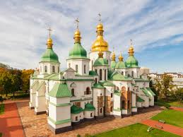

Україна має давню історію. У давнину на її території існувала Київська Русь.
Пізніше українські землі входили до складу різних держав, але народ зберіг свою культуру.
Україна стала незалежною державою у 1991 році.
В Україні є Карпати, річка Дніпро, ліси, степи та Чорне море.
Столиця України — Київ.
Також відомими містами є Львів, Одеса і Харків.
Українська культура відома народними піснями, танцями та вишиванками.
На початок